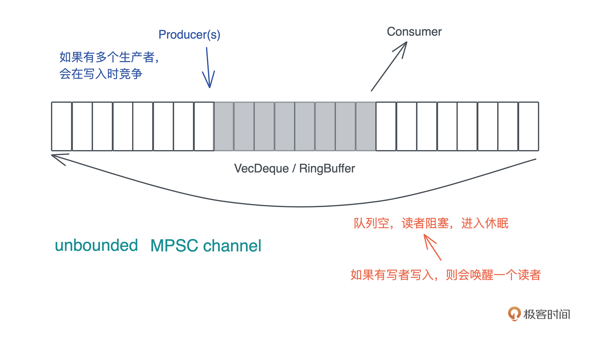

- 00 开篇词 让Rust成为你的下一门主力语言.md.html
- 01 内存：值放堆上还是放栈上，这是一个问题.md.html
- 02 串讲：编程开发中，那些你需要掌握的基本概念.md.html
- 03 初窥门径：从你的第一个Rust程序开始！.md.html
- 04 get hands dirty：来写个实用的CLI小工具.md.html
- 05 get hands dirty：做一个图片服务器有多难？.md.html
- 06 get hands dirty：SQL查询工具怎么一鱼多吃？.md.html
- 07 所有权：值的生杀大权到底在谁手上？.md.html
- 08 所有权：值的借用是如何工作的？.md.html
- 09 所有权：一个值可以有多个所有者么？.md.html
- 10 生命周期：你创建的值究竟能活多久？.md.html
- 11 内存管理：从创建到消亡，值都经历了什么？.md.html
- 12 类型系统：Rust的类型系统有什么特点？.md.html
- 13 类型系统：如何使用trait来定义接口？.md.html
- 14 类型系统：有哪些必须掌握的trait？.md.html
- 15 数据结构：这些浓眉大眼的结构竟然都是智能指针？.md.html
- 16 数据结构：Vec_T_、&[T]、Box_[T]_ ，你真的了解集合容器么？.md.html
- 17 数据结构：软件系统核心部件哈希表，内存如何布局？.md.html
- 18 错误处理：为什么Rust的错误处理与众不同？.md.html
- 19 闭包：FnOnce、FnMut和Fn，为什么有这么多类型？.md.html
- 20 4 Steps ：如何更好地阅读Rust源码？.md.html
- 21 阶段实操（1）：构建一个简单的KV server-基本流程.md.html
- 22 阶段实操（2）：构建一个简单的KV server-基本流程.md.html
- 23 类型系统：如何在实战中使用泛型编程？.md.html
- 24 类型系统：如何在实战中使用trait object？.md.html
- 25 类型系统：如何围绕trait来设计和架构系统？.md.html
- 26 阶段实操（3）：构建一个简单的KV server-高级trait技巧.md.html
- 27 生态系统：有哪些常有的Rust库可以为我所用？.md.html
- 28 网络开发（上）：如何使用Rust处理网络请求？.md.html
- 29 网络开发（下）：如何使用Rust处理网络请求？.md.html
- 30 Unsafe Rust：如何用C++的方式打开Rust？.md.html
- 31 FFI：Rust如何和你的语言架起沟通桥梁？.md.html
- 32 实操项目：使用PyO3开发Python3模块.md.html
- 33 并发处理（上）：从atomics到Channel，Rust都提供了什么工具？.md.html
- 34 并发处理（下）：从atomics到Channel，Rust都提供了什么工具？.md.html
- 35 实操项目：如何实现一个基本的MPSC channel？.md.html
- 36 阶段实操（4）：构建一个简单的KV server-网络处理.md.html
- 37 阶段实操（5）：构建一个简单的KV server-网络安全.md.html
- 38 异步处理：Future是什么？它和async_await是什么关系？.md.html
- 39 异步处理：async_await内部是怎么实现的？.md.html
- 40 异步处理：如何处理异步IO？.md.html
- 41 阶段实操（6）：构建一个简单的KV server-异步处理.md.html
- 42 阶段实操（7）：构建一个简单的KV server-如何做大的重构？.md.html
- 43 生产环境：真实世界下的一个Rust项目包含哪些要素？.md.html
- 44 数据处理：应用程序和数据如何打交道？.md.html
- 45 阶段实操（8）：构建一个简单的KV server-配置_测试_监控_CI_CD.md.html
- 46 软件架构：如何用Rust架构复杂系统？.md.html
- 加餐 Rust2021版次问世了！.md.html
- 加餐 代码即数据：为什么我们需要宏编程能力？.md.html
- 加餐 宏编程（上）：用最“笨”的方式撰写宏.md.html
- 加餐 宏编程（下）：用 syn_quote 优雅地构建宏.md.html
- 加餐 愚昧之巅：你的Rust学习常见问题汇总.md.html
- 加餐 期中测试：参考实现讲解.md.html
- 加餐 期中测试：来写一个简单的grep命令行.md.html
- 加餐 这个专栏你可以怎么学，以及Rust是否值得学？.md.html
- 大咖助场 开悟之坡（上）：Rust的现状、机遇与挑战.md.html
- 大咖助场 开悟之坡（下）：Rust的现状、机遇与挑战.md.html
- 特别策划 学习锦囊（一）：听听课代表们怎么说.md.html
- 特别策划 学习锦囊（三）：听听课代表们怎么说.md.html
- 特别策划 学习锦囊（二）：听听课代表们怎么说.md.html
- 用户故事 绝望之谷：改变从学习开始.md.html
- 用户故事 语言不仅是工具，还是思维方式.md.html
- 结束语 永续之原：Rust学习，如何持续精进？.md.html
- 捐赠
35 实操项目：如何实现一个基本的MPSC channel？
你好，我是陈天。
通过上两讲的学习，相信你已经意识到，虽然并发原语看上去是很底层、很神秘的东西，但实现起来也并不像想象中的那么困难，尤其是在 Rust 下，在[第 33 讲]中，我们用了几十行代码就实现了一个简单的 SpinLock。
你也许会觉得不太过瘾，而且 SpinLock 也不是经常使用的并发原语，那么今天，我们试着实现一个使用非常广泛的 MPSC channel 如何？
之前我们谈论了如何在搜索引擎的 Index writer 上使用 MPSC channel：要更新 index 的上下文有很多（可以是线程也可以是异步任务），而 IndexWriter 只能是唯一的。为了避免在访问 IndexWriter 时加锁，我们可以使用 MPSC channel，在多个上下文中给 channel 发消息，然后在唯一拥有 IndexWriter 的线程中读取这些消息，非常高效。
好，来看看今天要实现的 MPSC channel 的基本功能。为了简便起见，我们只关心 unbounded MPSC channel。也就是说，当队列容量不够时，会自动扩容，所以，任何时候生产者写入数据都不会被阻塞，但是当队列中没有数据时，消费者会被阻塞：- 
测试驱动的设计
之前我们会从需求的角度来设计接口和数据结构，今天我们就换种方式，完全站在使用者的角度，用使用实例（测试）来驱动接口和数据结构的设计。
需求 1
要实现刚才说的 MPSC channel，都有什么需求呢？首先，生产者可以产生数据，消费者能够消费产生出来的数据，也就是基本的 send/recv，我们以下面这个单元测试 1 来描述这个需求：
#[test]
fn channel_should_work() {
let (mut s, mut r) = unbounded();
s.send("hello world!".to_string()).unwrap();
let msg = r.recv().unwrap();
assert_eq!(msg, "hello world!");
}
这里，通过 unbounded() 方法， 可以创建一个 sender和一个 receiver，sender 有 send() 方法，可以发送数据，receiver 有 recv() 方法，可以接受数据。整体的接口，我们设计和 std::sync::mpsc 保持一致，避免使用者使用上的心智负担。
为了实现这样一个接口，需要什么样的数据结构呢？首先，生产者和消费者之间会共享一个队列，上一讲我们说到，可以用 VecDeque。显然，这个队列在插入和取出数据时需要互斥，所以需要用 Mutex 来保护它。所以，我们大概可以得到这样一个结构：
struct Shared<T> {
queue: Mutex<VecDeque<T>>,
}
pub struct Sender<T> {
shared: Arc<Shared<T>>,
}
pub struct Receiver<T> {
shared: Arc<Shared<T>>,
}
这样的数据结构应该可以满足单元测试 1。
需求 2
由于需要的是 MPSC，所以，我们允许多个 sender 往 channel 里发送数据，用单元测试 2 来描述这个需求：
#[test]
fn multiple_senders_should_work() {
let (mut s, mut r) = unbounded();
let mut s1 = s.clone();
let mut s2 = s.clone();
let t = thread::spawn(move || {
s.send(1).unwrap();
});
let t1 = thread::spawn(move || {
s1.send(2).unwrap();
});
let t2 = thread::spawn(move || {
s2.send(3).unwrap();
});
for handle in [t, t1, t2] {
handle.join().unwrap();
}
let mut result = [r.recv().unwrap(), r.recv().unwrap(), r.recv().unwrap()];
// 在这个测试里，数据到达的顺序是不确定的，所以我们排个序再 assert
result.sort();
assert_eq!(result, [1, 2, 3]);
}
这个需求，刚才的数据结构就可以满足，只是 Sender 需要实现 Clone trait。不过我们在写这个测试的时候稍微有些别扭，因为这一行有不断重复的代码：
let mut result = [r.recv().unwrap(), r.recv().unwrap(), r.recv().unwrap()];
注意，测试代码的 DRY 也很重要，我们之前强调过。所以，当写下这个测试的时候，也许会想，我们可否提供 Iterator 的实现？恩这个想法先暂存下来。
需求 3
接下来考虑当队列空的时候，receiver 所在的线程会被阻塞这个需求。那么，如何对这个需求进行测试呢？这并不简单，我们没有比较直观的方式来检测线程的状态。
不过，我们可以通过检测“线程是否退出”来间接判断线程是否被阻塞。理由很简单，如果线程没有继续工作，又没有退出，那么一定被阻塞住了。阻塞住之后，我们继续发送数据，消费者所在的线程会被唤醒，继续工作，所以最终队列长度应该为 0。我们看单元测试 3：
#[test]
fn receiver_should_be_blocked_when_nothing_to_read() {
let (mut s, r) = unbounded();
let mut s1 = s.clone();
thread::spawn(move || {
for (idx, i) in r.into_iter().enumerate() {
// 如果读到数据，确保它和发送的数据一致
assert_eq!(idx, i);
}
// 读不到应该休眠，所以不会执行到这一句，执行到这一句说明逻辑出错
assert!(false);
});
thread::spawn(move || {
for i in 0..100usize {
s.send(i).unwrap();
}
});
// 1ms 足够让生产者发完 100 个消息，消费者消费完 100 个消息并阻塞
thread::sleep(Duration::from_millis(1));
// 再次发送数据，唤醒消费者
for i in 100..200usize {
s1.send(i).unwrap();
}
// 留点时间让 receiver 处理
thread::sleep(Duration::from_millis(1));
// 如果 receiver 被正常唤醒处理，那么队列里的数据会都被读完
assert_eq!(s1.total_queued_items(), 0);
}
这个测试代码中，我们假定 receiver 实现了 Iterator，还假定 sender 提供了一个方法total_queued_items()。这些可以在实现的时候再处理。
你可以花些时间仔细看看这段代码，想想其中的处理逻辑。虽然代码很简单，不难理解，但是把一个完整的需求转化成合适的测试代码，还是要颇费些心思的。
好，如果要能支持队列为空时阻塞，我们需要使用 Condvar。所以 Shared
struct Shared<T> {
queue: Mutex<VecDeque<T>>,
available: Condvar,
}
这样当实现 Receiver 的 recv() 方法后，我们可以在读不到数据时阻塞线程：
// 拿到锁
let mut inner = self.shared.queue.lock().unwrap();
// ... 假设读不到数据
// 使用 condvar 和 MutexGuard 阻塞当前线程
self.shared.available.wait(inner)
需求 4
顺着刚才的多个 sender想，如果现在所有 Sender 都退出作用域，Receiver 继续接收，到没有数据可读了，该怎么处理？是不是应该产生一个错误，让调用者知道，现在 channel 的另一侧已经没有生产者了，再读也读不出数据了？
我们来写单元测试 4：
#[test]
fn last_sender_drop_should_error_when_receive() {
let (s, mut r) = unbounded();
let s1 = s.clone();
let senders = [s, s1];
let total = senders.len();
// sender 即用即抛
for mut sender in senders {
thread::spawn(move || {
sender.send("hello").unwrap();
// sender 在此被丢弃
})
.join()
.unwrap();
}
// 虽然没有 sender 了，接收者依然可以接受已经在队列里的数据
for _ in 0..total {
r.recv().unwrap();
}
// 然而，读取更多数据时会出错
assert!(r.recv().is_err());
}
这个测试依旧很简单。你可以想象一下，使用什么样的数据结构可以达到这样的目的。
首先，每次 Clone 时，要增加 Sender 的计数；在 Sender Drop 时，减少这个计数；然后，我们为 Receiver 提供一个方法 total_senders()，来读取 Sender 的计数，当计数为 0，且队列中没有数据可读时，recv() 方法就报错。
有了这个思路，你想一想，这个计数器用什么数据结构呢？用锁保护么？
哈，你一定想到了可以使用 atomics。对，我们可以用 AtomicUsize。所以，Shared 数据结构需要更新一下：
struct Shared<T> {
queue: Mutex<VecDeque<T>>,
available: Condvar,
senders: AtomicUsize,
}
需求 5
既然没有 Sender 了要报错，那么如果没有 Receiver了，Sender 发送时是不是也应该错误返回？这个需求和上面类似，就不赘述了。看构造的单元测试 5：
#[test]
fn receiver_drop_should_error_when_send() {
let (mut s1, mut s2) = {
let (s, _) = unbounded();
let s1 = s.clone();
let s2 = s.clone();
(s1, s2)
};
assert!(s1.send(1).is_err());
assert!(s2.send(1).is_err());
}
这里，我们创建一个 channel，产生两个 Sender 后便立即丢弃 Receiver。两个 Sender 在发送时都会出错。
同样的，Shared 数据结构要更新一下：
struct Shared<T> {
queue: Mutex<VecDeque<T>>,
available: Condvar,
senders: AtomicUsize,
receivers: AtomicUsize,
}
实现 MPSC channel
现在写了五个单元测试，我们已经把需求摸透了，并且有了基本的接口和数据结构的设计。接下来，我们来写实现的代码。
创建一个新的项目 cargo new con_utils --lib。在 cargo.toml 中添加 anyhow 作为依赖。在 lib.rs 里，我们就写入一句：pub mod channel , 然后创建 src/channel.rs，把刚才设计时使用的 test case、设计的数据结构，以及 test case 里使用到的接口，用代码全部放进来：
use anyhow::Result;
use std::{
collections::VecDeque,
sync::{atomic::AtomicUsize, Arc, Condvar, Mutex},
};
/// 发送者
pub struct Sender<T> {
shared: Arc<Shared<T>>,
}
/// 接收者
pub struct Receiver<T> {
shared: Arc<Shared<T>>,
}
/// 发送者和接收者之间共享一个 VecDeque，用 Mutex 互斥，用 Condvar 通知
/// 同时，我们记录有多少个 senders 和 receivers
struct Shared<T> {
queue: Mutex<VecDeque<T>>,
available: Condvar,
senders: AtomicUsize,
receivers: AtomicUsize,
}
impl<T> Sender<T> {
/// 生产者写入一个数据
pub fn send(&mut self, t: T) -> Result<()> {
todo!()
}
pub fn total_receivers(&self) -> usize {
todo!()
}
pub fn total_queued_items(&self) -> usize {
todo!()
}
}
impl<T> Receiver<T> {
pub fn recv(&mut self) -> Result<T> {
todo!()
}
pub fn total_senders(&self) -> usize {
todo!()
}
}
impl<T> Iterator for Receiver<T> {
type Item = T;
fn next(&mut self) -> Option<Self::Item> {
todo!()
}
}
/// 克隆 sender
impl<T> Clone for Sender<T> {
fn clone(&self) -> Self {
todo!()
}
}
/// Drop sender
impl<T> Drop for Sender<T> {
fn drop(&mut self) {
todo!()
}
}
impl<T> Drop for Receiver<T> {
fn drop(&mut self) {
todo!()
}
}
/// 创建一个 unbounded channel
pub fn unbounded<T>() -> (Sender<T>, Receiver<T>) {
todo!()
}
#[cfg(test)]
mod tests {
use std::{thread, time::Duration};
use super::*;
// 此处省略所有 test case
}
目前这个代码虽然能够编译通过，但因为没有任何实现，所以 cargo test 全部出错。接下来，我们就来一点点实现功能。
创建 unbounded channel
创建 unbounded channel 的接口很简单：
pub fn unbounded<T>() -> (Sender<T>, Receiver<T>) {
let shared = Shared::default();
let shared = Arc::new(shared);
(
Sender {
shared: shared.clone(),
},
Receiver { shared },
)
}
const INITIAL_SIZE: usize = 32;
impl<T> Default for Shared<T> {
fn default() -> Self {
Self {
queue: Mutex::new(VecDeque::with_capacity(INITIAL_SIZE)),
available: Condvar::new(),
senders: AtomicUsize::new(1),
receivers: AtomicUsize::new(1),
}
}
}
因为这里使用 default() 创建了 Shared
实现消费者
对于消费者，我们主要需要实现 recv 方法。
在 recv 中，如果队列中有数据，那么直接返回；如果没数据，且所有生产者都离开了，我们就返回错误；如果没数据，但还有生产者，我们就阻塞消费者的线程：
impl<T> Receiver<T> {
pub fn recv(&mut self) -> Result<T> {
// 拿到队列的锁
let mut inner = self.shared.queue.lock().unwrap();
loop {
match inner.pop_front() {
// 读到数据返回，锁被释放
Some(t) => {
return Ok(t);
}
// 读不到数据，并且生产者都退出了，释放锁并返回错误
None if self.total_senders() == 0 => return Err(anyhow!("no sender left")),
// 读不到数据，把锁提交给 available Condvar，它会释放锁并挂起线程，等待 notify
None => {
// 当 Condvar 被唤醒后会返回 MutexGuard，我们可以 loop 回去拿数据
// 这是为什么 Condvar 要在 loop 里使用
inner = self
.shared
.available
.wait(inner)
.map_err(|_| anyhow!("lock poisoned"))?;
}
}
}
}
pub fn total_senders(&self) -> usize {
self.shared.senders.load(Ordering::SeqCst)
}
}
注意看这里 Condvar 的使用。
在 wait() 方法里，它接收一个 MutexGuard，然后释放这个 Mutex，挂起线程。等得到通知后，它会再获取锁，得到一个 MutexGuard，返回。所以这里是：
inner = self.shared.available.wait(inner).map_err(|_| anyhow!("lock poisoned"))?;
因为 recv() 会返回一个值，所以阻塞回来之后，我们应该循环回去拿数据。这是为什么这段逻辑要被 loop {} 包裹。我们前面在设计时考虑过：当发送者发送数据时，应该通知被阻塞的消费者。所以，在实现 Sender 的 send() 时，需要做相应的 notify 处理。
记得还要处理消费者的 drop：
impl<T> Drop for Receiver<T> {
fn drop(&mut self) {
self.shared.receivers.fetch_sub(1, Ordering::AcqRel);
}
}
很简单，消费者离开时，将 receivers 减一。
实现生产者
接下来我们看生产者的功能怎么实现。
首先，在没有消费者的情况下，应该报错。正常应该使用 thiserror 定义自己的错误，不过这里为了简化代码，就使用 anyhow! 宏产生一个 adhoc 的错误。如果消费者还在，那么我们获取 VecDeque 的锁，把数据压入：
impl<T> Sender<T> {
/// 生产者写入一个数据
pub fn send(&mut self, t: T) -> Result<()> {
// 如果没有消费者了，写入时出错
if self.total_receivers() == 0 {
return Err(anyhow!("no receiver left"));
}
// 加锁，访问 VecDeque，压入数据，然后立刻释放锁
let was_empty = {
let mut inner = self.shared.queue.lock().unwrap();
let empty = inner.is_empty();
inner.push_back(t);
empty
};
// 通知任意一个被挂起等待的消费者有数据
if was_empty {
self.shared.available.notify_one();
}
Ok(())
}
pub fn total_receivers(&self) -> usize {
self.shared.receivers.load(Ordering::SeqCst)
}
pub fn total_queued_items(&self) -> usize {
let queue = self.shared.queue.lock().unwrap();
queue.len()
}
}
这里，获取 total_receivers 时，我们使用了 Ordering::SeqCst，保证所有线程看到同样顺序的对 receivers 的操作。这个值是最新的值。
在压入数据时，需要判断一下之前是队列是否为空，因为队列为空的时候，我们需要用 notify_one() 来唤醒消费者。这个非常重要，如果没处理的话，会导致消费者阻塞后无法复原接收数据。
由于我们可以有多个生产者，所以要允许它 clone：
impl<T> Clone for Sender<T> {
fn clone(&self) -> Self {
self.shared.senders.fetch_add(1, Ordering::AcqRel);
Self {
shared: Arc::clone(&self.shared),
}
}
}
实现 Clone trait 的方法很简单，但记得要把 shared.senders 加 1，使其保持和当前的 senders 的数量一致。
当然，在 drop 的时候我们也要维护 shared.senders 使其减 1：
impl<T> Drop for Sender<T> {
fn drop(&mut self) {
self.shared.senders.fetch_sub(1, Ordering::AcqRel);
}
}
其它功能
目前还缺乏 Receiver 的 Iterator 的实现，这个很简单，就是在 next() 里调用 recv() 方法，Rust 提供了支持在 Option/Result 之间很方便转换的函数，所以这里我们可以直接通过 ok() 来将 Result 转换成 Option：
impl<T> Iterator for Receiver<T> {
type Item = T;
fn next(&mut self) -> Option<Self::Item> {
self.recv().ok()
}
}
好，目前所有需要实现的代码都实现完毕， cargo test 测试一下。wow！测试一次性通过！这也太顺利了吧！
最后来仔细审视一下代码。很快，我们发现 Sender 的 Drop 实现似乎有点问题。如果 Receiver 被阻塞，而此刻所有 Sender 都走了，那么 Receiver 就没有人唤醒，会带来资源的泄露。这是一个很边边角角的问题，所以之前的测试没有覆盖到。
我们来设计一个场景让这个问题暴露：
#[test]
fn receiver_shall_be_notified_when_all_senders_exit() {
let (s, mut r) = unbounded::<usize>();
// 用于两个线程同步
let (mut sender, mut receiver) = unbounded::<usize>();
let t1 = thread::spawn(move || {
// 保证 r.recv() 先于 t2 的 drop 执行
sender.send(0).unwrap();
assert!(r.recv().is_err());
});
thread::spawn(move || {
receiver.recv().unwrap();
drop(s);
});
t1.join().unwrap();
}
在我进一步解释之前，你可以停下来想想为什么这个测试可以保证暴露这个问题？它是怎么暴露的？如果想不到，再 cargo test 看看会出现什么问题。
来一起分析分析，这里，我们创建了两个线程 t1 和 t2，分别让它们处理消费者和生产者。t1 读取数据，此时没有数据，所以会阻塞，而t2 直接把生产者 drop 掉。所以，此刻如果没有人唤醒 t1，那么 t1.join() 就会一直等待，因为 t1 一直没有退出。
所以，为了保证一定是 t1 r.recv()先执行导致阻塞、t2 再 drop(s)，我们（eat your own dog food）用另一个 channel 来控制两个线程的执行顺序。这是一种很通用的做法，你可以好好琢磨一下。
运行 cargo test 后，测试被阻塞。这是因为，t1 没有机会得到唤醒，所以这个测试就停在那里不动了。
要修复这个问题，我们需要妥善处理 Sender 的 Drop：
impl<T> Drop for Sender<T> {
fn drop(&mut self) {
let old = self.shared.senders.fetch_sub(1, Ordering::AcqRel);
// sender 走光了，唤醒 receiver 读取数据（如果队列中还有的话），读不到就出错
if old <= 1 {
// 因为我们实现的是 MPSC，receiver 只有一个，所以 notify_all 实际等价 notify_one
self.shared.available.notify_all();
}
}
}
这里，如果减一之前，旧的 senders 的数量小于等于 1，意味着现在是最后一个 Sender 要离开了，不管怎样我们都要唤醒 Receiver ，所以这里使用了 notify_all()。如果 Receiver 之前已经被阻塞，此刻就能被唤醒。修改完成，cargo test 一切正常。
性能优化
从功能上来说，目前我们的 MPSC unbounded channel 没有太多的问题，可以应用在任何需要 MPSC channel 的场景。然而，每次读写都需要获取锁，虽然锁的粒度很小，但还是让整体的性能打了个折扣。有没有可能优化锁呢？
之前我们讲到，优化锁的手段无非是减小临界区的大小，让每次加锁的时间很短，这样冲突的几率就变小。另外，就是降低加锁的频率，对于消费者来说，如果我们能够一次性把队列中的所有数据都读完缓存起来，以后在需要的时候从缓存中读取，这样就可以大大减少消费者加锁的频次。
顺着这个思路，我们可以在 Receiver 的结构中放一个 cache：
pub struct Receiver<T> {
shared: Arc<Shared<T>>,
cache: VecDeque<T>,
}
如果你之前有 C 语言开发的经验，也许会想，到了这一步，何必把 queue 中的数据全部读出来，存入 Receiver 的 cache 呢？这样效率太低，如果能够直接 swap 两个结构内部的指针，这样，即便队列中有再多的数据，也是一个 O(1) 的操作。
嗯，别急，Rust 有类似的 std::mem::swap 方法。比如（代码）：
use std::mem;
fn main() {
let mut x = "hello world".to_string();
let mut y = "goodbye world".to_string();
mem::swap(&mut x, &mut y);
assert_eq!("goodbye world", x);
assert_eq!("hello world", y);
}
好，了解了 swap 方法，我们看看如何修改 Receiver 的 recv() 方法来提升性能：
pub fn recv(&mut self) -> Result<T> {
// 无锁 fast path
if let Some(v) = self.cache.pop_front() {
return Ok(v);
}
// 拿到队列的锁
let mut inner = self.shared.queue.lock().unwrap();
loop {
match inner.pop_front() {
// 读到数据返回，锁被释放
Some(t) => {
// 如果当前队列中还有数据，那么就把消费者自身缓存的队列（空）和共享队列 swap 一下
// 这样之后再读取，就可以从 self.queue 中无锁读取
if !inner.is_empty() {
std::mem::swap(&mut self.cache, &mut inner);
}
return Ok(t);
}
// 读不到数据，并且生产者都退出了，释放锁并返回错误
None if self.total_senders() == 0 => return Err(anyhow!("no sender left")),
// 读不到数据，把锁提交给 available Condvar，它会释放锁并挂起线程，等待 notify
None => {
// 当 Condvar 被唤醒后会返回 MutexGuard，我们可以 loop 回去拿数据
// 这是为什么 Condvar 要在 loop 里使用
inner = self
.shared
.available
.wait(inner)
.map_err(|_| anyhow!("lock poisoned"))?;
}
}
}
}
当 cache 中有数据时，总是从 cache 中读取；当 cache 中没有，我们拿到队列的锁，读取一个数据，然后看看队列是否还有数据，有的话，就 swap cache 和 queue，然后返回之前读取的数据。
好，做完这个重构和优化，我们可以运行 cargo test，看看已有的测试是否正常。如果你遇到报错，应该是 cache 没有初始化，你可以自行解决，也可以参考：
pub fn unbounded<T>() -> (Sender<T>, Receiver<T>) {
let shared = Shared::default();
let shared = Arc::new(shared);
(
Sender {
shared: shared.clone(),
},
Receiver {
shared,
cache: VecDeque::with_capacity(INITIAL_SIZE),
},
)
}
虽然现有的测试全数通过，但我们并没有为这个优化写测试，这里补个测试：
#[test]
fn channel_fast_path_should_work() {
let (mut s, mut r) = unbounded();
for i in 0..10usize {
s.send(i).unwrap();
}
assert!(r.cache.is_empty());
// 读取一个数据，此时应该会导致 swap，cache 中有数据
assert_eq!(0, r.recv().unwrap());
// 还有 9 个数据在 cache 中
assert_eq!(r.cache.len(), 9);
// 在 queue 里没有数据了
assert_eq!(s.total_queued_items(), 0);
// 从 cache 里读取剩下的数据
for (idx, i) in r.into_iter().take(9).enumerate() {
assert_eq!(idx + 1, i);
}
}
这个测试很简单，详细注释也都写上了。
小结
今天我们一起研究了如何使用 atomics 和 Condvar，结合 VecDeque 来创建一个 MPSC unbounded channel。完整的代码见 playground，你也可以在 GitHub repo 这一讲的目录中找到。
不同于以往的实操项目，这一讲，我们完全顺着需求写测试，然后在写测试的过程中进行数据结构和接口的设计。和普通的 TDD 不同的是，我们先一口气把主要需求涉及的行为用测试来表述，然后通过这个表述，构建合适的接口，以及能够运行这个接口的数据结构。
在开发产品的时候，这也是一种非常有效的手段，可以让我们通过测试完善设计，最终得到一个能够让测试编译通过的、完全没有实现代码、只有接口的版本。之后，我们再一个接口一个接口实现，全部实现完成之后，运行测试，看看是否出问题。
在学习这一讲的内容时，你可以多多关注构建测试用例的技巧。之前的课程中，我反复强调过单元测试的重要性，也以身作则在几个重要的实操中都有详尽地测试。不过相比之前写的测试，这一讲中的测试要更难写一些，尤其是在并发场景下那些边边角角的功能测试。
不要小看测试代码，有时候构造测试代码比撰写功能代码还要烧脑。但是，当你有了扎实的单元测试覆盖后，再做重构，比如最后我们做和性能相关的重构，就变得轻松很多，因为只要cargo test通过，起码这个重构没有引起任何回归问题（regression bug）。
当然，重构没有引入回归问题，并不意味着重构完全没有问题，我们还需要考虑撰写新的测试，覆盖重构带来的改动。
思考题
我们实现了一个 unbounded MPSC channel，如果要将其修改为 bounded MPSC channel（队列大小是受限的），需要怎么做？
欢迎在留言区交流你的学习心得和思考，感谢你的收听，今天你已经完成了Rust学习的第35次打卡。如果你觉得有收获，也欢迎你分享给身边的朋友，邀他一起讨论。我们下节课见。
© 2019 - 2023 Liangliang Lee. Powered by gin and hexo-theme-book.